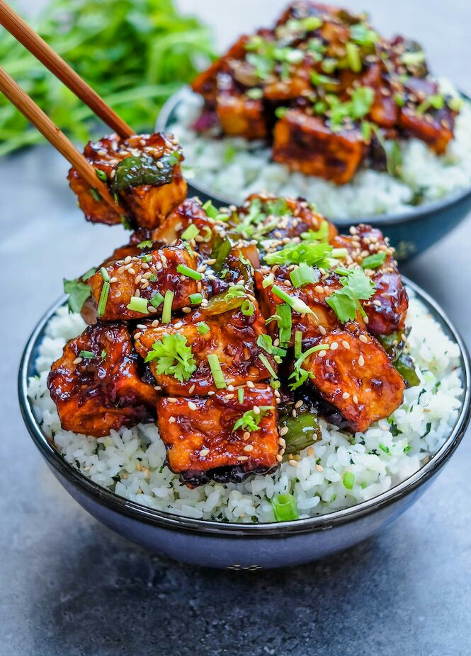

Homemade and healthy recipies of your favourite dishes are here:)

Stir-Fried Sweet Chili Tofu
Ingredients FOR THE SWEET CHILI SAUCE
Mix together:
minced garlic
room temperature water
coconut sugar or other sugar or choice
maple syrup , other liquid sweetener, or sugar
chili sauce , I used sriracha – feel free to adjust according to desired spice
soy sauce
sesame oil
corn starch
Feel free to adjust to your taste!
PAN-FRYING THE TOFU
I coated the tofu in some cornstarch before pan frying them to create a crisp outside that goes well with the sauce when mixed afterwards.I then set the tofu aside while I prepared the sauce.
Afterwards, I basically cooked the tofu down in the sweet chili sauce. Served it over some steamed short grain rice for a delicious vegan meal!